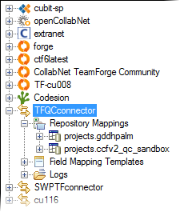
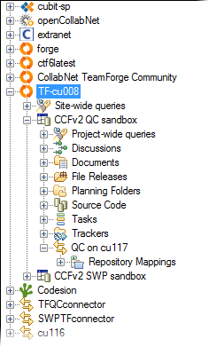

The connector functionality that's available to you depends on the permissions you've
been assigned in the TeamForge project involved in
the integration.
Connector functionality within individual projects is the responsibility of
TeamForge project administrators. Project
administrators can designate specific tasks to team members using
TeamForge's
role-based access control.
Modes of access
It is possible to access the
TeamForge connector server in either of these two
modes:
- Site administrator mode: When the TeamForge connector is added as a separate
CollabNet site in the Desktop, all projects in the site are visible. Site
administrators can configure the connector. In this example, the TeamForge connector TFQCConnector is
added as a CollabNet site.

- Project mode: When the TeamForge site is added in the Desktop, the TeamForge connector appears as a sub-node
in all TeamForge projects where it is
enabled by the respective project administrators. In this example, the TeamForge project CCFv2 QC Sandbox
has the connector QC on cu117 enabled.

Permissions
The connector is added as an
integrated application in TeamForge. Site
administrators can configure the connector. Project administrators can make it available
in their projects, and
grant project members role-based access to
the connector.
In the
TeamForge web
interface, specific permissions are available for the following aspects of connector
functionality:
- Core connector configuration
- Failed shipments
- Identity mappings
- Repository mappings
- Field mapping rules
- Field mapping templates
- Resetting synchronization
- Pausing synchronization
By default,
TeamForge project
administrators can edit repository mappings and field mappings, and view relevant
information such as failed artifact entries, identity mappings and log files. They
can delegate specific connector tasks to team members using the above permissions.